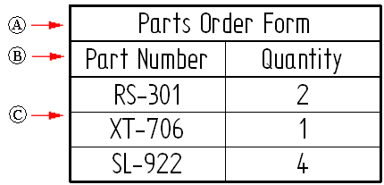
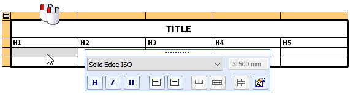

User-defined tables
The Table command  creates a table that contains user-defined columns and data. It can be used, for
example, to add manufacturing notes or a title block to the drawing.
creates a table that contains user-defined columns and data. It can be used, for
example, to add manufacturing notes or a title block to the drawing.
The table consists of a title (A), column header (B), and column data (C).

Creating a table
When you select the Table command , it displays the Table Properties dialog box, which contains tabs that guide you through creating the table.
-
The Title tab is where you specify the text, formatting, and positioning of table titles and subtitles. For more information, see Using the Title tab.
-
Use the Columns tab to define the number of columns, the column headings, and the initial formatting of column data and column headings.
-
On the Data tab, you can type information directly in the table and also insert property text using the Insert Property Text button
 . You can add rows and columns, and you can add and edit data in any column. Change
the column headings by double-clicking the cell at the top of the column, or by selecting
a column and then selecting the Column Format button . For more information, see Using the Data tab.
. You can add rows and columns, and you can add and edit data in any column. Change
the column headings by double-clicking the cell at the top of the column, or by selecting
a column and then selecting the Column Format button . For more information, see Using the Data tab. -
After entering the table data, you can specify the table style and the maximum table height or number of data rows using the General tab. The Location tab specifies the placement location on the sheet. For more information, see Defining table size and location.
-
Optionally, you can use the Sorting tab to specify that the table is sorted based on any column headers you defined. You can use the Groups tab to group table data into categories, which keep like items together. For more information, see Using the Sorting tab and Grouping data in tables.
-
Save your table format to a name you define using the Saved Settings options on the General tab.
Property text in a user-defined table
A user-defined table is not associative to a drawing view or model document, but you can use property text to include standard properties, custom properties, and dimensions whose values update when the table is updated.
For example, to include important gear dimensions in a table (Pitch Angle, Module, Number of Teeth, root Diameter), you can expose the variables in the part or assembly Variable Table, and then reference them in the user-defined table as property text.
To add property text to a data cell in a user-defined table, the Insert Property Text button is available in the following locations:
-
In the Table Properties dialog box, on the Title tab and on the Data tab.

-
In direct edit mode, on the Table Format command bar.

-
Information and values derived from property text are updated when you select the Update All command.
For more information, see Add and edit property text in a user-defined table.
Creating a custom table style
You can use the Styles command to create your own, fully customized Table styles in the Draft environment and make them available for many different table applications. For example, custom table styles can be applied to parts lists, pipe lists, hole tables, bend tables, drawing notes, revision tables, and the dimension table used by families of assemblies.
You can select and apply a custom table style to a user-defined table using the Table command bar or the General tab in the Table Properties dialog box. For more information, see Table styles.
To learn how you can change the appearance of individual elements of a table—titles, columns, headers, and data cells—without changing the table style, see the help topic, Manipulate table rows and columns.